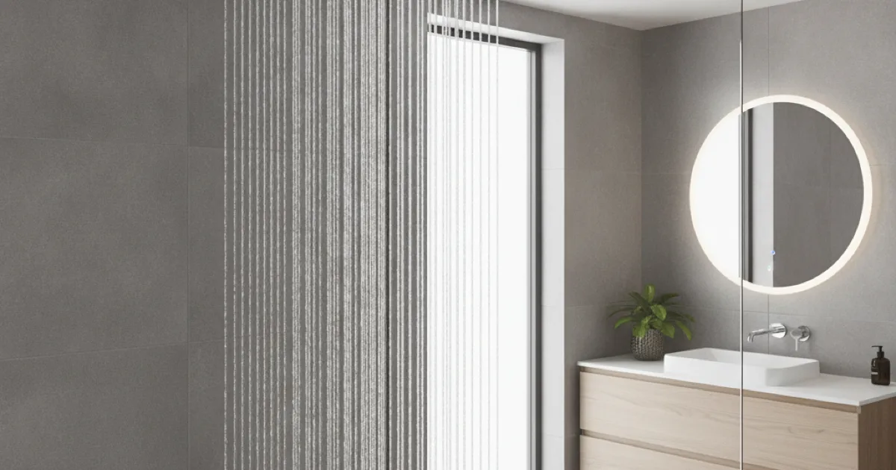
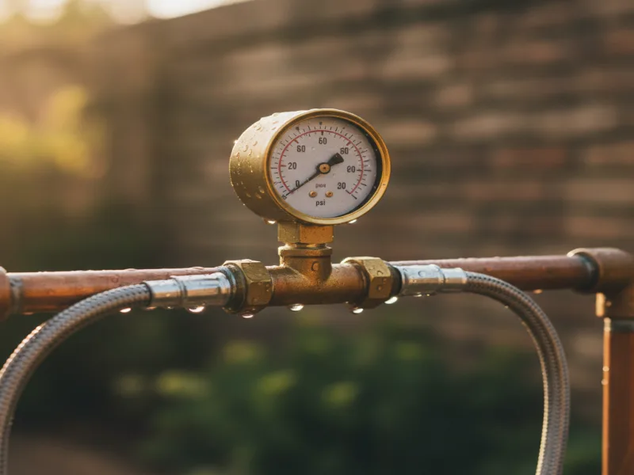

Low Water Pressure Repair in Armonk, NY
Weak water pressure always has a real cause, whether that's buildup inside old pipes or a leak you can't see. We find it and fix it, instead of just masking the symptom.
- Licensed & Insured
- Same-Day Service Available
- Upfront Pricing
- 15+ Years of Experience

Signs of low water pressure
- Showers that feel weaker than they used to, especially at certain times of day
- Faucets that take longer to fill a sink or pot than they should
- Pressure that drops further when more than one fixture runs at once
- A gradual decline over months or years, rather than a sudden change
- Pressure that's noticeably worse on upper floors than on the ground floor
A sudden, whole-house pressure drop is a different problem, often pointing to something with the main line itself. What we're talking about here is the slower, creeping kind of low pressure that homeowners tend to just get used to over time, without realizing it has an identifiable cause.
What causes low water pressure
- Internal pipe corrosion. Older galvanized supply lines corrode from the inside over decades, gradually narrowing the passage water flows through.
- Sediment and mineral buildup. Similar to corrosion, mineral deposits can accumulate inside pipes and fixtures, restricting flow.
- A partially closed shutoff valve. Sometimes the fix is as simple as a valve that isn't fully open.
- A hidden leak. Water escaping somewhere else in the system reduces the pressure available at your fixtures.
- A failing pressure regulator. If your home has one, a worn regulator can cause pressure to drop below its intended setting.
The International Association of Certified Home Inspectors notes that internal corrosion in galvanized pipe is one of the more common, and easy to miss, causes of gradually declining water pressure in older homes — it happens slowly enough that homeowners often chalk it up to "old plumbing" instead of a fixable cause.
What to check before you call
- Confirm the main shutoff valve and any valve near the water meter are fully open.
- Check whether the issue affects the whole house or just specific fixtures.
- Look at faucet aerators and showerheads for visible mineral buildup, which is an easy first thing to rule out.
- Note when the pressure loss started and whether it's gotten worse gradually or all at once.
How we diagnose and fix it
We test pressure at multiple points in your home to understand whether the issue is isolated or systemic, then work through the likely causes systematically rather than replacing parts by guesswork. If old, corroded pipe turns out to be the culprit, we'll talk through replacing corroded pipes throughout your home as a long-term fix, since patching one section rarely solves pressure loss caused by pipe thinning throughout the system.
If pressure loss is sudden or whole-house, we'll also check for a problem with your water main, and if we suspect water is escaping somewhere it shouldn't, we'll start by checking for a hidden leak first before recommending any pipe work.
See our full service list for everything else we handle beyond pressure issues.

When to call a pro
Call us if low pressure has been getting worse over time, if it's isolated to certain fixtures or floors, or if you've ruled out the simple explanations, like a closed valve or a clogged aerator. Pressure loss caused by internal pipe corrosion only gets worse with time, so it's worth diagnosing properly rather than living with it.
Explore our diagnostic plumbing services for more of what we handle for Armonk homes.
Frequently asked questions
Why has my water pressure gotten worse over time?
In older homes, this is often caused by internal corrosion or mineral buildup gradually narrowing the inside of supply pipes. It happens slowly enough that most homeowners don't notice until the difference becomes significant.
Can a hidden leak cause low water pressure?
Yes. Water escaping somewhere in your system reduces the pressure available at your fixtures, even if you can't see or hear the leak itself.
Is low water pressure always a pipe problem?
Not always. Sometimes it's a partially closed valve or a failing pressure regulator. We check the simpler explanations before recommending anything more involved.
Will replacing my pipes actually fix low pressure?
If internal corrosion or scale buildup is the cause, yes. We'll confirm that's actually what's happening before recommending pipe replacement.
Why is my pressure worse upstairs than downstairs?
This can be related to pipe sizing, elevation, or a partial blockage somewhere between the two levels. We'll test at multiple points to pin down the cause.
How long does it take to diagnose low water pressure?
Initial diagnosis is usually done in a single visit. If further investigation, like leak detection, is needed, we'll explain that clearly before moving forward.